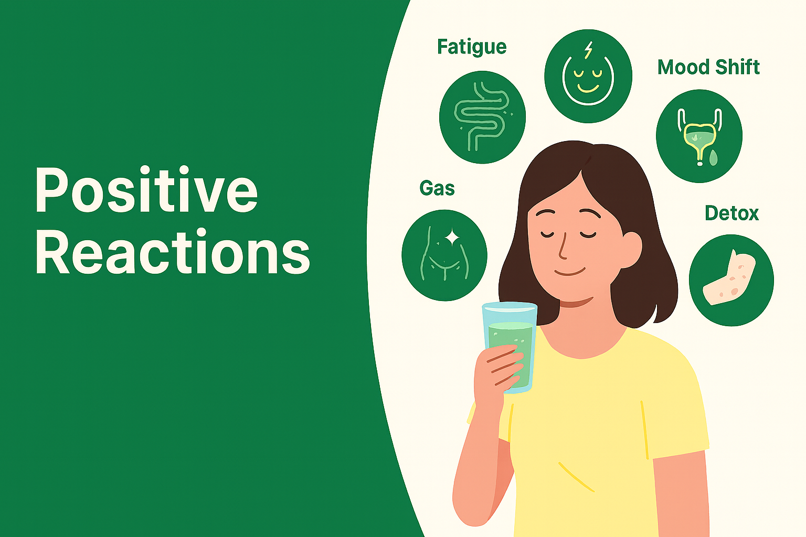

When starting probiotic nutritional drinks, some short-term, mild reactions can appear. These are usually signs of adjustment, detox and re-balancing — not harmful side effects.
開始飲用益生菌營養液時，出現的短暫輕微反應多屬身體調整與排毒訊號，並非副作用。
Gas • mild diarrhea • appetite change
脹氣、輕微腹瀉、食慾改變
Thirst • frequent urination
口渴、尿多
Temporary itch/pimples
短暫痕癢／暗瘡
Tired first → then steadier
初期較疲倦 → 其後更穩定
Digestive bubbles, thirst, light fatigue.
腸胃蠕動增加、口渴、輕微疲倦。
Bowel pattern stabilises; skin may purge slightly.
排便漸穩；皮膚可能短暫排毒。
Energy & sleep improve for most people.
多數人精神與睡眠改善。
Short-term reactions usually settle within days to weeks and often signal re-balancing. If symptoms persist, consult a healthcare professional.
大多於數天至數週內消退，多屬好轉現象；如持續不適，請諮詢醫護人員。
For general information only. This page does not replace medical advice. 以上為一般資料，不能代替專業醫療建議。